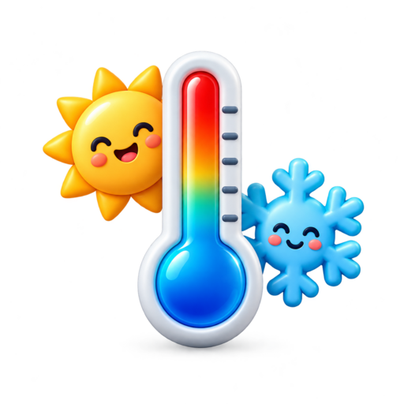

FERRAMENTA GRATUITA
Conversor de temperatura
Converta valores entre Fahrenheit, Celsius e Kelvin em poucos segundos.

Resultado
Informe um valor e clique em converter.
Conversão de temperatura sem complicação
Celsius é a escala mais utilizada no mundo. Fahrenheit é comum nos Estados Unidos, enquanto Kelvin é usada principalmente em cálculos científicos.
Para converter Fahrenheit em Celsius, subtraia 32 e divida o resultado por 1,8. Exemplo: 68 °F correspondem a 20 °C.